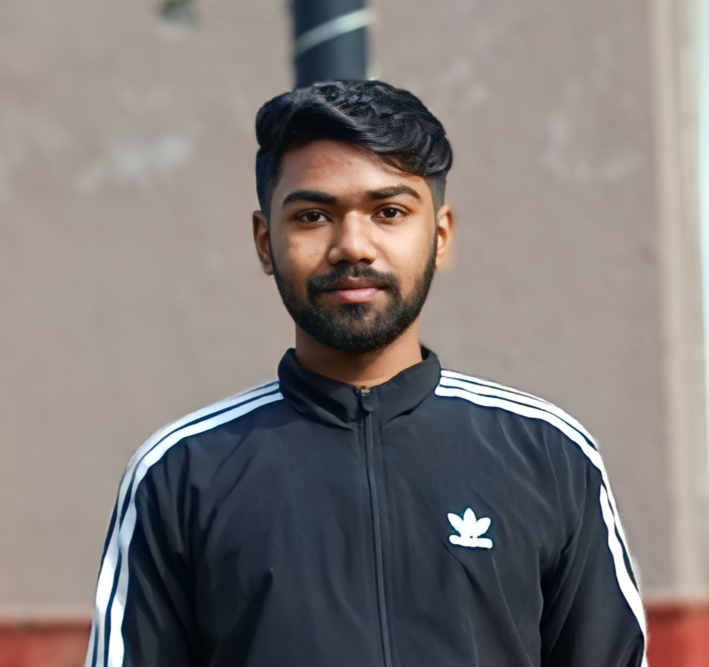

Hey there! 👋
I'm Sonu
Currently rocking my BCA journey at N.B.G.S.M College... It's a great ride of computer knowledge, coding adventures, and all things tech. Join me as I navigate through the bits and bytes of my BCA life, learning and growing every step of the way. Let's dive into the world of computer science together! 🚀💻#BCAJourney #N.B.G.S.M.College #TechExplorer
My goal is to become a web developer, and I'm putting in a lot of effort to achieve it. Being a web
developer means creating and improving websites, and that's what I'm passionate about. I spend time
learning different programming languages, like HTML, CSS, and JavaScript, to build the foundation
for my
skills. Every day, I practice coding and work on real projects to gain hands-on experience.
I enjoy the challenge of problem-solving and making websites functional and user-friendly. My
dedication
to this goal motivates me to stay updated on the latest web development trends and technologies. I
believe that with determination and continuous learning, I can turn my passion for web development
into
a fulfilling career. I look forward to creating innovative and impactful websites that make a
positive
difference.